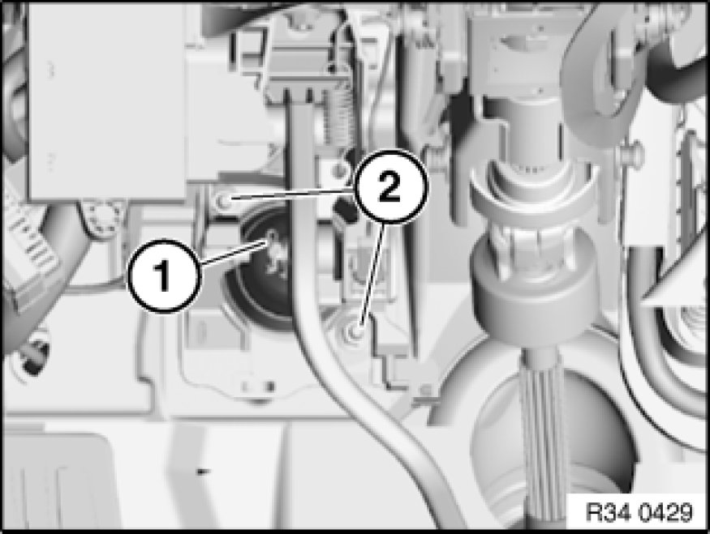
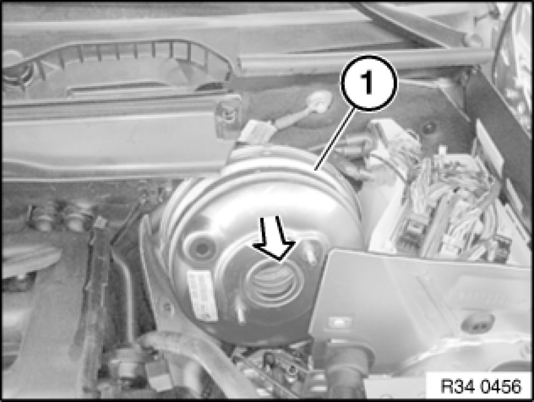
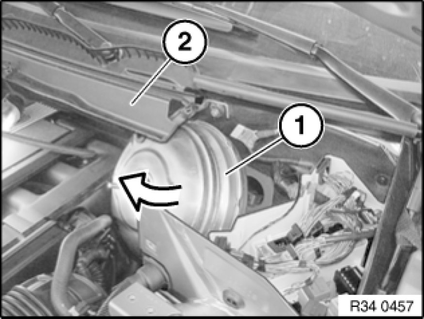

Vacuum Brake Booster: Service and Repair
34 33 505 - Removing and installing or replacing brake booster

Necessary preliminary tasks:
- Read and comply with General Information Service and Repair.
- Remove brake master cylinder Removing and Installing/Replacing Master Brake Cylinder for DSC
- Remove left footwell trim 51 45 185 Removing and Installing/Replacing Panel For Pedals

Detach locking clip (1) from brake pedal, disengage and pull out locking pin.
Unscrew nuts (2).
Installation:
Replace self-locking nuts.
Tightening torque 35 11 1AZ 35 11 Pedal Assembly Console.

Carefully pull brake booster (1) out of bulkhead and tilt out.
Important!
Do not use any force when removing and installing the brake unit; the brake unit can be damaged under certain circumstances.

Tilt microfilter housing cover (2) upwards and lift out brake booster (1) in direction of arrow.
After installation:
- Bleed braking system Bleeding Brake System with DSC